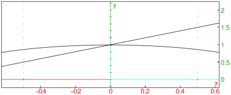

24.10.2 Circular arcs
See also Section 24.10.1
The arc
command creates circular arcs.
-
arc takes three mandatory arguments and two optional
arguments:
-
A,B, two points.
- a, a real number between −2π and 2π.
- Optionally, varc,varr, two variable names.
- arc(A,B,a⟨ ⟩)
returns and draws the circular arc from A to B that represents
and angle of a. (Note that the
center of the circle will be (A+B)/2+i(B −
A)/(2tan(a/2)).)
If the arguments varc,varr are given, they will be assigned
the center and radius of the circle.
Examples
